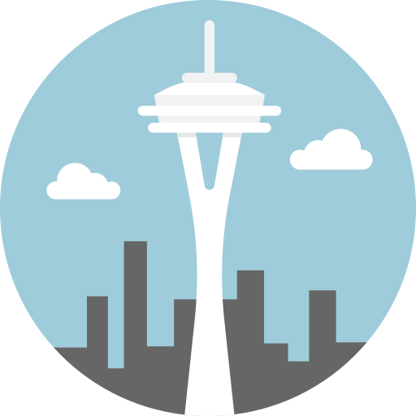
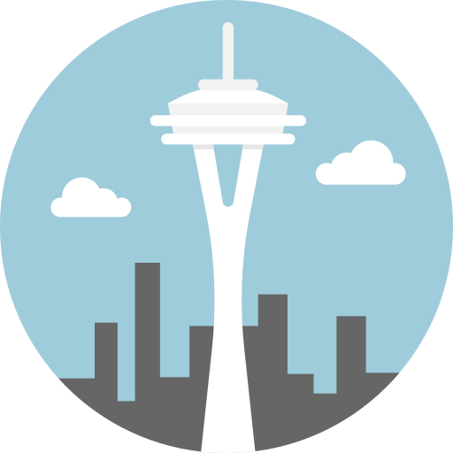

I'm Nathan.
A Computer Science Student


I am a Fourth-Year Computer Science student at the University of Washington - Seattle. I enjoy coding and weightlifting on my spare time!

The first programming language that I learned was Java. I have 3+ years of experience and have built numerous projects with this language. I really enjoy object oriented programming as a whole, and I hope to continue to grow my knowledge in OOP.


I am currently learning scripting languages like Javascript and Typescript. Most of my knowledge came from a project that was done using React and a Spark Java server in a recently taken Software Design class at UW.


I am currently learning web development languages like HTML(yes yes, it's Markup I know I know :/ ) and CSS with most of my knowledge coming from a previous online course that I took with UDEMY. This website is a way to show off what I have learned.
I am a First-Generation Latino student who grew up in a small town in Washington. My favorite part of being in school so far has been experiencing things that I can share with my family. Growing up in a lower-income household, my parents had to work a lot of hours, and that meant that they had to give up most of their youth in order to make sure that we were okay, so I hope to one day repay them in whatever way I can!